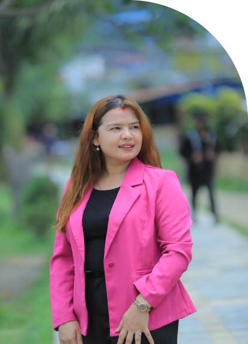
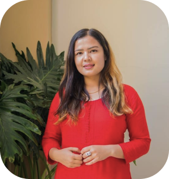
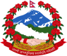

<section class="founder">
    <section class="content">
        <aside>
            
            
        </aside>
        <main>
            <h1>Meet the founder of Su Lakshyan</h1>
            <p>Hi, I’m Nisha! <br>
                I am passionate social worker with 10+ years of experience collaborating with business companies and
                non-governmental organizations to drive community development, women empowerment, vocational skills and
                training, job placements, and eco-conscious projects. A dedicated and organized leader, adept at
                managing projects at the grassroots level. Skilled in problem-solving, resourcefulness, and effective
                negotiation to achieve beneficial agreements.</p>
            <div class="logo">
                
                <p>SUPORTED BY GANDAKI PROVINCE</p>
            </div>
        </main>
    </section>
</section>